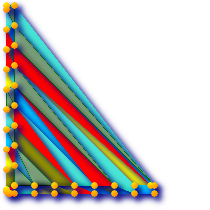

Name
ST_DelaunayTriangles — Return a Delaunay triangulation around the given input points.
Synopsis
geometry ST_DelaunayTriangles(geometry g1, float tolerance, int4 flags);
Description
Return a Delaunay triangulation around the vertices of the input geometry. Output is a COLLECTION of polygons (for flags=0) or a MULTILINESTRING (for flags=1) or TIN (for flags=2). The tolerance, if any, is used to snap input vertices togheter.
Availability: 2.1.0 - requires GEOS >= 3.4.0.
 This function supports 3d and will not drop the z-index.
This function supports 3d and will not drop the z-index.
This function supports Triangles and Triangulated Irregular Network Surfaces (TIN).
2D Examples
 Original polygons -- our original geometry --
ST_Union(ST_GeomFromText('POLYGON((175 150, 20 40,
50 60, 125 100, 175 150))'),
ST_Buffer(ST_GeomFromText('POINT(110 170)'), 20)
) |
 ST_DelaunayTriangles of 2 polygons: delaunay triangle polygons each triangle themed in different color
-- geometries overlaid multilinestring triangles
SELECT
ST_DelaunayTriangles(
ST_Union(ST_GeomFromText('POLYGON((175 150, 20 40,
50 60, 125 100, 175 150))'),
ST_Buffer(ST_GeomFromText('POINT(110 170)'), 20)
))
As dtriag;
|
 -- delaunay triangles as multilinestring
SELECT
ST_DelaunayTriangles(
ST_Union(ST_GeomFromText('POLYGON((175 150, 20 40,
50 60, 125 100, 175 150))'),
ST_Buffer(ST_GeomFromText('POINT(110 170)'), 20)
),0.001,1)
As dtriag;
|
 -- delaunay triangles of 45 points as 55 triangle polygons
-- this produces a table of 42 points that form an L shape SELECT (ST_DumpPoints(ST_GeomFromText( 'MULTIPOINT(14 14,34 14,54 14,74 14,94 14,114 14,134 14, 150 14,154 14,154 6,134 6,114 6,94 6,74 6,54 6,34 6, 14 6,10 6,8 6,7 7,6 8,6 10,6 30,6 50,6 70,6 90,6 110,6 130, 6 150,6 170,6 190,6 194,14 194,14 174,14 154,14 134,14 114, 14 94,14 74,14 54,14 34,14 14)'))).geom INTO TABLE l_shape; -- output as individual polygon triangles SELECT ST_AsText((ST_Dump(geom)).geom) As wkt FROM ( SELECT ST_DelaunayTriangles(ST_Collect(geom)) As geom FROM l_shape) As foo; ---wkt --- POLYGON((6 194,6 190,14 194,6 194)) POLYGON((14 194,6 190,14 174,14 194)) POLYGON((14 194,14 174,154 14,14 194)) POLYGON((154 14,14 174,14 154,154 14)) POLYGON((154 14,14 154,150 14,154 14)) POLYGON((154 14,150 14,154 6,154 14)) : :
|